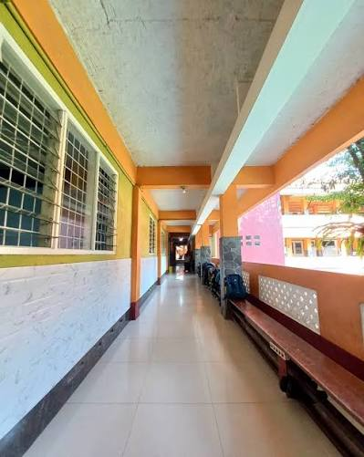
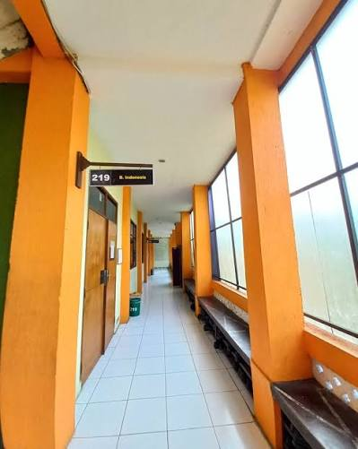
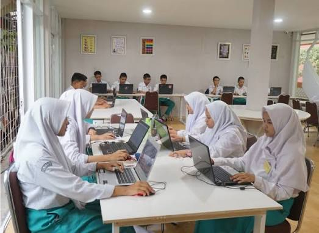

Analisis Konsumsi Listrik
Modul analisis yang menampilkan grafik konsumsi listrik di sekolah.
Energi listrik adalah sumber utama dari aktivitas kita sekarang. Pengelolaan konsumsi listrik yang bijak di sekolah membawa dampak langsung bagi operasional, lingkungan, dan kesadaran ilmiah kita.

Ruang kelas, laboratorium komputer, dan ruang guru mengonsumsi daya listrik yang signifikan. Pembiasaan mematikan lampu, kipas, monitor dan mencabut kabel charger saat tidak digunakan membantu efisiensi operasional sekolah.
Sebagian besar listrik masih bersumber dari pembangkit berbahan bakar fosil (batubara). Setiap kilowatt-jam (kWh) yang kita hemat secara langsung mengurangi emisi karbon dan laju pemanasan global.
Efisiensi tidak sekadar himbauan moral, melainkan didasarkan pada pengukuran terukur. Melalui audit energi dan visualisasi data pemakaian, warga sekolah dapat melihat bukti nyata dampak dari kebiasaan mereka.


